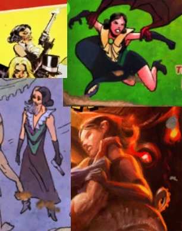
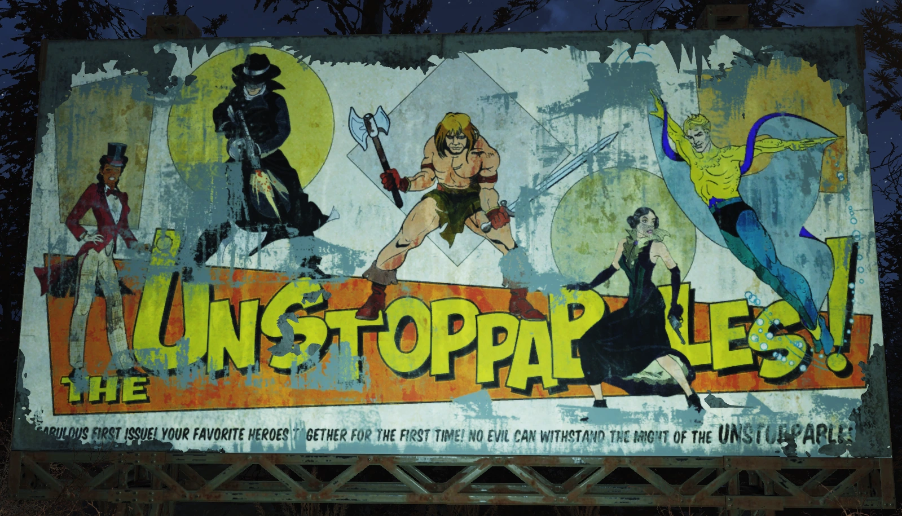
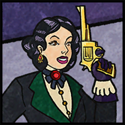
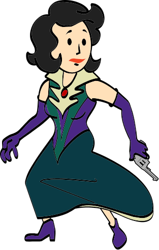

Mistress of Mystery
ミステリーの女主人 — 闇夜の守護者
概要
ミステリーの女主人（本名：クローディア・マーティン）は、ヒューブリス・コミックが生み出した架空のヒーローキャラクターであり、『Fallout 4』と『Fallout 76』に登場する。
作中ではシャノン・リバーズがラジオドラマの声優を務め、2077年のテレビシリーズではクレア・レデルが後任として予定されていた。
背景
クローディア・マーティンという名のもとに生まれた彼女の幼い人生は、アメリカ人考古学者の両親が「アムン・レーの失われたピラミッド」を調査中に行方不明になったことで引き裂かれた。
孤児となり、一人ぼっちになったクローディアは、エジプトのカイロの街路で生き延びることを余儀なくされた。
やがて裕福な相続人に養子として迎えられ、18歳の誕生日に両親の遺品を受け取ると、彼らの失踪の真相を探る決意をする。
そこから彼女は、古代の伝説、秘密結社、暗い陰謀の網の目へと踏み込んでいくことになった。
性格と能力
ミステリーの女主人は自信に満ち、機転が利き、有能なヒーローである。
超人的な力や神秘的な能力の代わりに、彼女は技術、訓練、知略、ステルス、策略を駆使して敵を打ち負かす。
また、頭韻法（アリタレーション）を好んで使うという話し方の特徴がある。
単独で活動することが多いが、彼女は長いキャリアの中でヒューブリス・コミックの他のヒーローたちとも共演してきた。
主な仲間には、長年の友人で元恋人のシルバー・シュラウド、「ミステリウム！」ミステリーシリーズのパートナーであるジ・インスペクター、そしてアンストッパブルズのチームメイトたちがいる。
メディア展開
ミステリーの女主人は、ヒューブリス・コミック・ユニバースにおいて最も長く続いている人気スーパーヒーローキャラクターの一人である。
2039年の『ヒューブリス・ヒーローズ！』第8号で初登場して以来、何百冊ものコミック、ラジオ放送、その他の作品でフィーチャーされてきた。
主要なメディア展開：
- 週刊新聞漫画（2052年〜2057年）
- 小説5冊
- アクションフィギュア複数シリーズ
- 2077年8月、シルバー・シュラウドの実写テレビ番組への出演が発表（大戦争により実現せず）
30人以上のアーティストによって描かれてきた。最も象徴的なラジオ声優はシャノン・リバーズであり、彼女はテレビシリーズでもこのヒーローを演じる予定だった。
しかしプロデューサーのアーロン・バボウスキーがシャノンをクレア・レデルに交代させたが、大戦争によって撮影は実現しなかった。
ミステリーの装具（Regalia of Mystery）
ミステリーの女主人は熟達した徒手格闘家で、主にキックを得意とする。
技術と訓練に加え、以下の強力な道具を駆使した：
- 秘密のヴェール（Veil of Secrets） — 顔を隠し、正体を覆い、感覚を研ぎ澄ませるヴェール
- ミステリーの装束（Garb of Mysteries） — 白い襟の黒いイブニングガウン、黒いヒールと長い黒い手袋
- ラーの目（Eye of Ra） — 能力を高める固有のブローチ
- ファントム・デバイス — 逃走を助ける道具
- バステトの刃（Blade of Bastet） — 伝説の剣
- セトの声（Voice of Set） — 固有の.44リボルバー（号によって能力が頻繁に変わった）
遺産
ミステリーの女主人の声優シャノン・リバーズは、大戦争後、ウェストバージニアの自身の私邸でミステリーの女主人の物語を元に、自警団の女性組織「ミステリー結社（Order of Mysteries）」を創設した。
これは、テレビ出演のために受けた戦闘訓練と、夫フレデリックがスーパーヒロインのアジトを模して設置した秘密基地によって支えられていた。
大戦争で孤児となった多くの少女たちを引き取り、ミステリー結社を創設。彼女たちはミステリーの女主人のストーリーラインから多くのモチーフを取り入れた。
シャノンは脚本の一貫性に問題があることを認めつつも、それらは彼女たちの小さな社会の枠組みを提供し、壮大さの要素が敵に恐怖を与えるのに役立ったと述べた。
しかし、ミステリー結社は内部の裏切りによって崩壊した。シャノン・リバーズの娘が全ての判明しているメンバーを殺害し、その娘自身も参加を望んでいたレイダーたちに裏切られた。
登場作品
ミステリーの女主人は『Fallout 4』、『Fallout 76』、『Fallout: The Roleplaying Game』、『Fallout Shelter Online』で言及されている。
ギャラリー




ヒューブリス・コミックの中でも最もドラマチックなストーリーを持つ、ミステリーの女主人の記事です。
超能力に一切頼らず、技術・知略・ステルスだけで戦うというコンセプトが他のヒーローとの差別化になっていてカッコいいですね。エジプトのカイロで孤児として育ち、考古学者の両親の失踪の謎を追うというオリジンストーリーも冒険映画のようで魅力的です。
何より感動的なのは、戦後の「遺産」セクションです。声優シャノン・リバーズが架空のヒーローの理念を現実に持ち込み、孤児の少女たちとともにミステリー結社を創設したという物語は、Fallout 76の中でも屈指の感動的なエピソードです。
しかし、その結社がシャノンの実の娘の裏切りによって壊滅するという悲劇的な結末は、このシリーズの残酷さを如実に物語っています。Fallout 76でこのクエストラインを辿る体験は本当に忘れられません。
This article was created by translating and editing Mistress of Mystery from Nukapedia: The Fallout Wiki.
Licensed under the Creative Commons Attribution-Share Alike License (CC BY-SA 3.0).
コミュニティ維持のため、寄付を受け付けております。
> COMMENTS